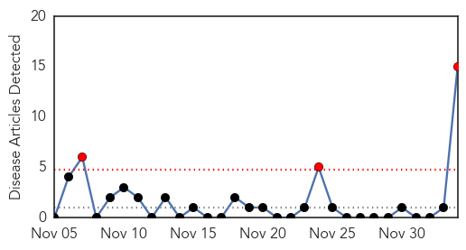
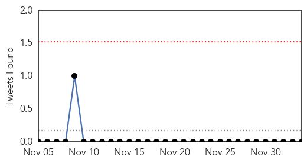

Hepatitis
30-Day Web Trend
2 alerts, 1 warnings

30-Day Twitter Trend
0 alerts, 0 warnings

Article Locations

Article Confidences

Top Articles:
- 0.866
- Hepatitis C cases rise in this village in Greater Noida : India, News
- 0.785
- R.I. Medicaid limits supply of Hepatitis C drug due to cost
- 0.617
- Patient tests negative in 2nd potential Hepatitis A case linked to Mercer County restaurant
- 0.608
- CDC Endorses Circumcision for Health Reasons
- 0.545
- BMS announces nine grants to support care for high-risk patients with Hepatitis B & C in India & China
Top Tweets:
-
No tweets found for Dec 04, 2014
Swine Flu
30-Day Web Trend
3 alerts, 0 warnings

30-Day Twitter Trend
0 alerts, 0 warnings

Article Locations

Article Confidences

Top Articles:
- 0.999
- Flu vaccine may be less effective this winter
- 0.999
- Health Officials Warn This Year’s Flu Vaccine Won’t Prevent New H3N2 Strain Of Influenza « CBS San Francisco
- 0.999
- Flu vaccine may be less effective this winter
- 0.998
- Flu vaccine may be less effective this winter
- 0.998
- Flu vaccine may be less effective this winter
- 0.998
- Flu vaccine may be less effective this winter
- 0.998
- Flu vaccine may be less effective this winter
- 0.998
- Flu Vaccine
- 0.998
- Flu vaccine may not be effective for this year's strains, CDC says
- 0.997
- Flu vaccine protects against wrong strain, US health officials warn
- 0.997
- Health Officials Say Flu Vaccine May Not Be Very Effective This Winter
- 0.996
- Flu vaccine may be less effective this winter
- 0.996
- Flu Vaccine May Be Less Effective This Winter
- 0.966
- Surveillance for H1N1 stepped up in Coimbatore
- 0.827
- Suspected Swine Flu Case in Dharmapuri Hospital
Top Tweets:
-
No tweets found for Dec 04, 2014